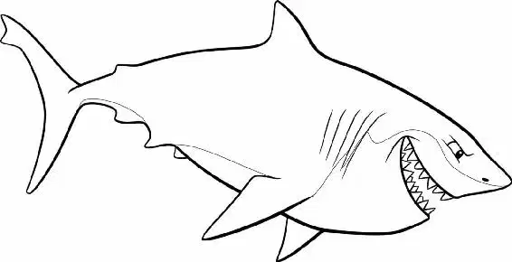

The giant shark bared row upon row of razor-sharp white teeth as its mouth spread into a wide, hungry grin.
“Hello!” said the shark.
“Well, hi!” Dory said cheerfully.
“Name’s Bruce.” The shark held out a fin. Marlin shivered, too frightened to do anything.
“That’s all right,” Bruce told Marlin. “I understand. Why trust a shark—right?”
Bruce studied the two smaller fish. “How would you morsels like to come to a little get-together I’m having?”
Dory smiled. “You mean like a party?”
“Yeah, right—a party. What do you say?” Bruce asked.
Dory looked over at Marlin and said, “Ooh, I love parties. That sounds like fun.”
Marlin couldn’t believe his ears. A shark party? He was sure they wanted to eat him.
“You know,” said Marlin, “parties are fun, and it’s tempting. But we can’t because—” Bruce wrapped a fin around each fish.
They were trapped! “Aw, come on,” he said. “I insist.”
“Oookay,” Marlin said nervously, “that’s all that matters...”
Bruce led Marlin and Dory over a rocky ridge into an undersea crater. The giant hole was littered with floating sea mines. Heavy iron chains moored them in place.
“Hey, look!” said Dory, pointing to the mines. “Balloons! It is a party!”
Bruce laughed. “Mind your distance, though. Those ‘balloons’ can be a bit dodgy. You wouldn’t want one of them to pop!”
Bruce weaved safely through the mines, taking Dory and Marlin with him. They drew closer to a shipwreck—a sunken submarine. They peered inside through a hole blasted in its middle.
“Anchor! Chum!” Bruce called out. “We’ve got company!”
A hammerhead shark and a mako shark circled below. “Well, it’s about time, mate,” said Anchor, the hammerhead, anxiously.
Chum agreed. “We’ve already gone through the snacks. And I’m still starving.”
Bruce pushed Marlin and Dory down into the sub. More sharks! Marlin thought. And they were all snapping their jaws hungrily.
Brrring! A diving bell rang.
“Right, then, the meeting has officially come to order,” Bruce said, ushering them into the group. Then he swam to a rusted makeshift podium.
All the sharks turned to him, listening closely.
It is a meeting! Marlin thought.
“Let us all say the pledge,” Bruce continued.
Together, all the sharks recited, “I am a nice shark. Not a mindless eating machine. If I am to change this image, I must first change myself. Fish are friends. Not food.”
Bruce nodded. “Today’s meeting is Step Five: Bring a Fish Friend. Now, do you all have your friends?”
“Got mine!” Anchor said proudly. He lifted a fin. A scared, shaking fish peeked out.
“Hey there!” Dory said, waving.
“How ’bout you, Chum?” Bruce asked. “Oh, well… I, um… seem to have misplaced my… uh… friend,” Chum said, embarrassed. He smiled just enough to reveal the skeletal remains of a fish tail stuck between his teeth.
“That’s all right, Chum,” said Bruce. “I had a feeling this would be a difficult step. You can help yourself to one of my friends.” “Aw, thanks, mate,” Chum said, hugging Marlin tightly. “A little chum for Chum, eh?”
Marlin sighed nervously.
“I’ll start the testimonies. It’s been three weeks since my last fish, on my honor, or may I be chopped up and made into soup.”
The other sharks clapped. “You’re an inspiration to all of us!”
Bruce looked around. “Who’s next?” Dory swam up to the podium. Marlin groaned. What was she doing?
“Hi, I’m Dory. And, uh, well… I don’t think I’ve ever eaten a fish!” she said.
Everyone applauded. “Good on ya, mate,” said one shark.
“That’s incredible,” said another.
While the sharks were distracted, Marlin freed himself. He tried to get Dory’s attention at the podium.
Then Bruce spotted Marlin out of the corner of his eye. “How ’bout you, mate? What’s your problem?” he asked.
Nervously, Marlin answered, “Me? I don’t have a problem.”
Bruce didn’t believe Marlin and pushed him up to the podium. Excited to see that he was a clownfish, the sharks asked Marlin to tell them a joke.
“So the sea mollusk says to the sea cucumber…” Marlin was struggling to entertain the sharks when he spied a hole in the roof. And there, dangling from a piece of metal, was a diver’s mask!
